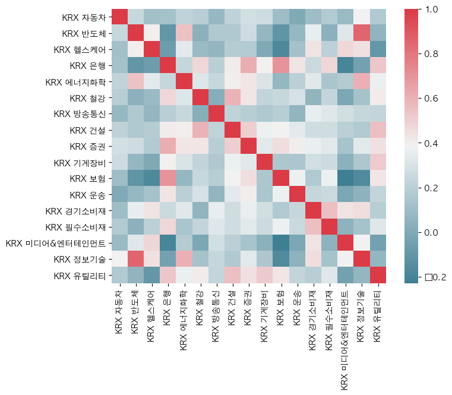

지표간의 상관계수와 히트맵 🌡¶
늘 상승하는 시장의 주식을 고르면 좋겠지만 현실을 그렇지 않다.
그래서 주식을 고를때는 서로의 등락을 어느정도 상쇄시켜주는 주식들을 고르는 것이 변동성을 낮추는데 도움이 된다.
지표 살펴보기¶
[9]:
import pandas as pd
import numpy as np
from coredotfinance.data import KrxReader
krx = KrxReader()
df = krx.read_date('2021-08-02', kind='index')
df
[9]:
| index_name | close | change | change_ratio | open | high | low | volume | trading_value | market_cap | |
|---|---|---|---|---|---|---|---|---|---|---|
| 0 | KRX 300 | 1937.99 | 13.82 | 0.72 | 1934.49 | 1937.99 | 1920.12 | 160613542 | 9631867653031 | 2130861690225350 |
| 1 | KTOP 30 | 11887.85 | 88.57 | 0.75 | 11859.16 | 11887.85 | 11749.46 | 30790493 | 3689096937046 | 1208044903694060 |
| 2 | KRX 100 | 6721.11 | 56.02 | 0.84 | 6702.19 | 6721.11 | 6652.51 | 64494351 | 6341746338998 | 1751589413095060 |
| 3 | KRX Mid 200 | 1908.97 | 7.25 | 0.38 | 1906.34 | 1913.26 | 1897.41 | 108389473 | 1567910094438 | 107902827160199 |
| 4 | KRX 자동차 | 2362.33 | 25.16 | 1.08 | 2350.73 | 2368.11 | 2339.75 | 5780039 | 437656921120 | 136803810973990 |
| 5 | KRX 반도체 | 3905.20 | 79.70 | 2.08 | 3848.94 | 3915.70 | 3837.55 | 16300818 | 902121666728 | 121734655963780 |
| 6 | KRX 헬스케어 | 4460.51 | 121.91 | 2.81 | 4358.23 | 4460.51 | 4358.23 | 34156435 | 2225796410255 | 235534448310795 |
| 7 | KRX 은행 | 739.36 | -7.33 | -0.98 | 746.82 | 747.85 | 734.56 | 8360049 | 199809388970 | 74972654857950 |
| 8 | KRX 에너지화학 | 4018.54 | 22.57 | 0.56 | 4009.57 | 4019.13 | 3945.81 | 12675504 | 1124443610944 | 174341679156100 |
| 9 | KRX 철강 | 2107.57 | -26.10 | -1.22 | 2154.54 | 2156.11 | 2091.51 | 9606389 | 293657122116 | 57210958943800 |
| 10 | KRX 방송통신 | 1031.20 | 10.61 | 1.04 | 1022.92 | 1033.42 | 1020.20 | 10847386 | 144682340175 | 40874427961506 |
| 11 | KRX 건설 | 776.45 | -4.49 | -0.57 | 783.12 | 784.31 | 771.31 | 11989378 | 207607075640 | 50077681586595 |
| 12 | KRX 증권 | 826.94 | 2.13 | 0.26 | 828.89 | 830.41 | 820.58 | 9397241 | 69566513098 | 29747446663674 |
| 13 | KRX 기계장비 | 652.91 | -4.60 | -0.70 | 657.07 | 658.57 | 647.95 | 25540653 | 517508837270 | 75959509525750 |
| 14 | KRX 보험 | 1341.34 | -2.19 | -0.16 | 1350.31 | 1359.72 | 1334.16 | 3704619 | 70610281505 | 41510084314120 |
| 15 | KRX 운송 | 1366.02 | -18.06 | -1.30 | 1386.07 | 1386.68 | 1362.12 | 13940199 | 329568727690 | 50516277546530 |
| 16 | KRX 경기소비재 | 1528.74 | -6.06 | -0.39 | 1543.19 | 1545.95 | 1519.92 | 21430531 | 742310148925 | 91714337062960 |
| 17 | KRX 필수소비재 | 1762.23 | 5.62 | 0.32 | 1763.61 | 1767.40 | 1755.23 | 7927801 | 393381914592 | 106221216090490 |
| 18 | KRX 미디어&엔터테인먼트 | 3977.47 | -5.80 | -0.15 | 3996.07 | 4008.94 | 3963.61 | 8985034 | 1082066786585 | 208798035028270 |
| 19 | KRX 정보기술 | 1814.61 | 20.89 | 1.16 | 1805.24 | 1815.52 | 1792.25 | 37032891 | 2228053972264 | 705358839858020 |
| 20 | KRX 유틸리티 | 963.25 | 9.92 | 1.04 | 957.29 | 964.62 | 953.24 | 3390226 | 90947484350 | 21238332905500 |
| 21 | KRX 300 정보기술 | 2938.06 | 32.87 | 1.13 | 2924.15 | 2939.40 | 2902.34 | 33361889 | 2219349516084 | 704250573625700 |
| 22 | KRX 300 금융 | 858.70 | -4.95 | -0.57 | 865.66 | 867.55 | 852.89 | 15054183 | 338749945955 | 149024906027190 |
| 23 | KRX 300 자유소비재 | 1795.41 | 9.43 | 0.53 | 1795.49 | 1799.22 | 1778.69 | 16972729 | 956776888300 | 218650493459900 |
| 24 | KRX 300 산업재 | 759.30 | -2.90 | -0.38 | 763.31 | 764.49 | 754.81 | 35153694 | 1192793303320 | 242325662028150 |
| 25 | KRX 300 헬스케어 | 3754.17 | 107.44 | 2.95 | 3663.07 | 3754.17 | 3663.07 | 30573314 | 2075480579490 | 220738504717600 |
| 26 | KRX 300 커뮤니케이션서비스 | 2889.38 | -2.14 | -0.07 | 2901.04 | 2907.48 | 2874.58 | 10283892 | 1169904702350 | 241357050055050 |
| 27 | KRX 300 소재 | 1914.46 | -1.75 | -0.09 | 1927.48 | 1928.35 | 1885.86 | 11711138 | 1178715653860 | 198864209741000 |
| 28 | KRX 300 필수소비재 | 1725.91 | 4.04 | 0.23 | 1728.99 | 1733.13 | 1721.01 | 3391652 | 289476741422 | 96252860788260 |
KRX 300 필수소비재와 KRX 필수소비재는 똑같은 지표의 특성을 공유할 것이다.
KRX 300금융과 KRX 증권 또한 같은 지표의 특성을 공유할 것이다.
따라서 index_name에 숫자가 들어가 있는 지표들은 상관계수 계산에서 제외하자.
[38]:
import re
regx = re.compile('[0-9]')
index_names = [i for i in df['index_name'] if re.search(regx, i) is None]
index_names
[38]:
['KRX 자동차',
'KRX 반도체',
'KRX 헬스케어',
'KRX 은행',
'KRX 에너지화학',
'KRX 철강',
'KRX 방송통신',
'KRX 건설',
'KRX 증권',
'KRX 기계장비',
'KRX 보험',
'KRX 운송',
'KRX 경기소비재',
'KRX 필수소비재',
'KRX 미디어&엔터테인먼트',
'KRX 정보기술',
'KRX 유틸리티']
지표의 데이터¶
그 다음 위 지표들의 최근 3개월간의 데이터를 read 함수를 이용해서 모아보자.
주식간의 상관관계는 등락률을 기준으로 볼 것이기 때문에 이에 change_ratio column의 데이터만 모은다
[43]:
index_data = []
for symbol in index_names:
data = krx.read(symbol=symbol, start = '2021-04-01', end = '2021-07-01', kind='index')
index_data.append(data['change_ratio'].to_list())
KRX 자동차
KRX 반도체
KRX 헬스케어
KRX 은행
KRX 에너지화학
KRX 철강
KRX 방송통신
KRX 건설
KRX 증권
KRX 기계장비
KRX 보험
KRX 운송
KRX 경기소비재
KRX 필수소비재
KRX 미디어&엔터테인먼트
KRX 정보기술
KRX 유틸리티
상관계수 corr¶
DataFrame에 있는 corr를 사용해서 상관관계 계수를 얻어본다.
method는 pearson 방식을 사용한다.
[44]:
stock_data = pd.DataFrame(index_data).T
stock_data.columns = index_names
corr = stock_data.corr(method='pearson')
히트맵 using seaborn¶
plt의 font는 unicode를 인식하지 못한다.
따라서 unicode를 인식하는 폰트로 설정해줘야 한글이 깨지지 않는다.
[45]:
import matplotlib.pyplot as plt
import seaborn as sns
plt.rcParams['font.family'] = 'AppleGothic'
f, ax = plt.subplots(figsize=(8, 6))
sns.heatmap(corr, mask=np.zeros_like(corr, dtype=np.bool), cmap=sns.diverging_palette(220, 10, as_cmap=True),
square=True, ax=ax)
plt.show()

상관계수는 +1에 가까울수록 변동성(change_ratio)가 비슷하고 -1에 가까울수록 변동성이 반대로 움직임을 의미한다.
상관계수에 의해서 포트폴리오를 구성해본다면 반도체와 미디어&엔터테인먼트를 함께 구성하는것은 효율적이지 못하다.
그보다는 반도체와 은행을 함께 구성하는 것이 효율적이다.